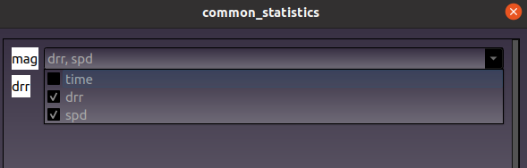

Customization¶
Attributes¶
Pre-defined names and units for these and other coordintes and variables are
available from toto.core.attributes. This module defines
variable names and some CF attributes by loading information from
attributes.yml file. The attributes can be accessed for example as:
from toto.core.attributes import attrs
In [1]: attrs['ATTRS']['hs']
Out[1]: {'long_name': 'sea surface wave significant height', 'units': 'm'}
The module also provides a function to standarise coordinate and variable attributes in a Dataset object using the information defined in attributes.yml:
- toto.core.attributes.set_metadata_attributes(Metadata)[source]
Standarise CF attributes in Toto variables
I/O functions¶
The inputs and outputs functions can be found are available from toto.inputs and toto.outputs.
To add a new function see Input
New plugins¶
Other plugins can be added to the toto.plugins folder.
To do so, create a new folder inside the toto/plugins directory.
TOTO will read all function that are in the directory if the filename is not started by _.
These _ functions are private functions and will not appear in the GUI toolbar. No rules apply to these functions.
However, plugin’s functions must comply with a few rules:
Write a
__init__()file with a description of the module.Add the panda backend extension above the class name, where PLUGINS_NAME is your plugin’s name and the Class name:
@pd.api.extensions.register_dataframe_accessor("PLUGINS_NAME")
The name of the Class in the file must match the name of the register_dataframe_accessor
A pandas object must be the input of the “__init__” function where self.data and self.dfout are initialized:
def __init__(self, pandas_obj):
self.data = pandas_obj
self.dfout = pd.DataFrame(index=self.data.index.copy())
New functions¶
To be recognize, a function must have the variable name as input, followed by args. args is a dictionary with the options needed to run the function.
def my_funct(self,variable1='mag',variable2='drr',\
args={'options1':'x',\
'options2':y,
}):
If more a list of variable is needed as input. The variable can be a list. In this case, the GUI will show a drop down menu as input.
{kind=link}
def my_funct(self,variable1=['mag'])
Depending on the type of the key’s dictionary, the option will be displayed differently in the GUI.
To get a dropdown menu:
args={'Choose':{'options1':True,'options2':False}}
To get a float, string or integer:
args={'Enter a float':45.1,'Enter a integer':3,'Enter a string':'string'}
To get a list of numbers:
args={'Enter a list':[]}
To get a calendar:
args={'date':datetime}